Kibana Guide: Create a Rule with a Connector
|
This content was generated with the assistance of AI and should be verified against the official documentation before being relied on in production. |
Checked on 2026-11-11 against Kibana 9.5.x.
What you build
You create two connectors and one rule. The webhook connector guide-webhook posts to the lab’s webhook receiver and the connector guide-server-log writes to the Kibana log. The rule Guide Bookshelf error logs is an Elasticsearch query rule:
it runs every minute, counts the Bookshelf log records with severity_text : "ERROR" of the last minute and raises an alert when there are more than five. Its action sends the rule name, the alert, the document count and the condition to the receiver when the alert becomes active, and a second action tells the receiver when the alert recovers.
You force the failure with the load generator, read the alert in Kibana and read the payload at the receiver. The figure shows the end of the story: the alert of the rule, Recovered after traffic returned to normal.
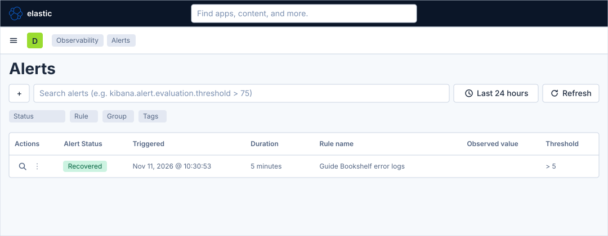
Before you start
-
Start the Kibana profile of the hands-on lab and wait about a minute:
cd lab docker compose --profile kibana up -d -
Open http://localhost:5601 and sign in as
elasticwith the passwordlab-elastic-password. When Kibana opens its full-screen welcome page, click Explore on my own. -
Do the guide Upload a file and create a data view, which creates the data view Bookshelf logs (guides) (index pattern
logs-generic.otel-default, time field@timestamp), and let the load generator run for a couple of minutes. The previous guide in the series is Share, export and move dashboards; this guide does not depend on it. -
The webhook connector and the alert actions need a licence above the basic one; the lab starts a trial licence, which is enough. The user
elastichas every privilege the guide needs. -
The webhook receiver of the lab listens on port 8081 of the host and on port 8080 inside the Docker network. The connector of this guide uses its own path,
/guide-kibana, so that its deliveries are easy to tell from the ones of the lab’s provisioned rules. -
The guide was checked on Elasticsearch and Kibana 9.5.6. The Connectors and Rules pages, the connector forms, the rule form with its three steps, the alerts page and the alert flyout were read in the lab, and a rule with the settings of this guide was created there through the API and forced to fire; the connector form, the rule form and the action form were then replayed click by click. The Server log form and the exact wrapping of the action body editor are drawn from the Elastic documentation, so look for a control by its name when it is not where a figure shows it. The figures are drawings of the Kibana 9.5 user interface, not screenshots, so small details can differ from your screen. A highlighted box with a number marks the control of the step with the same number.
Steps
The rule form of Kibana 9.5 is a page, not a flyout, and it has three steps on one page: Definition, Actions and Details. The map shows the page and its regions; come back to it when a control is not where a figure shows it.
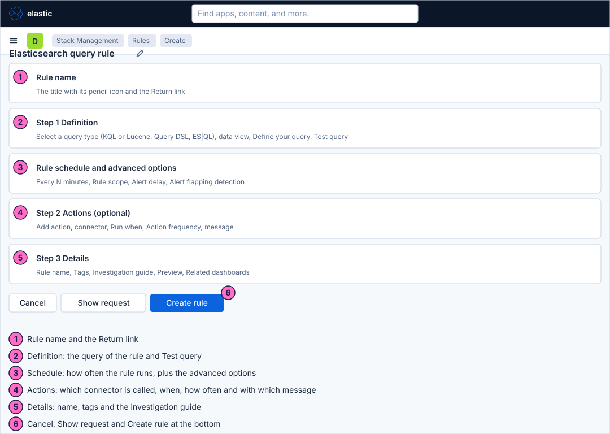
Create the connectors
-
Open the primary navigation (Toggle primary navigation) and, under Management, click Stack Management.
-
In the left menu, under Alerts and Insights, click Connectors.
-
Click Create connector.
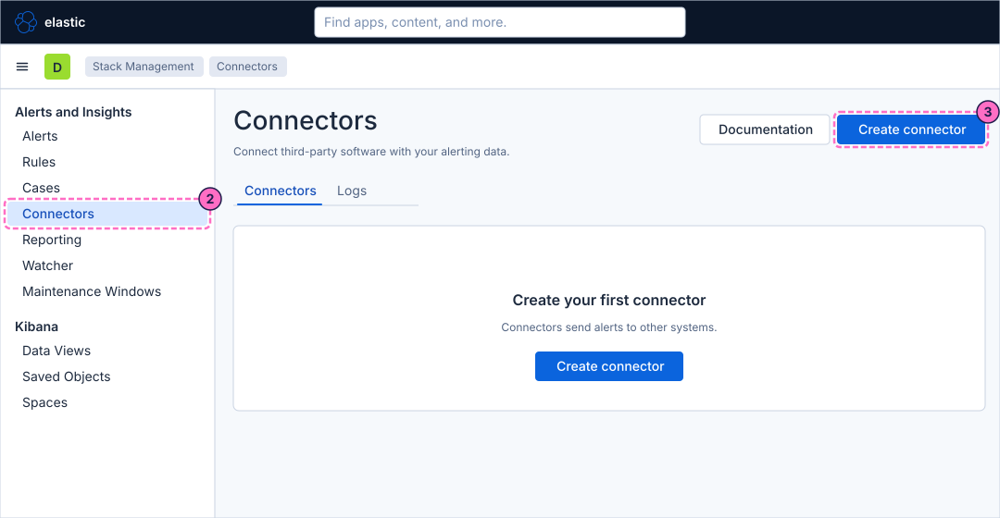
-
In the flyout Select a connector, click Webhook.
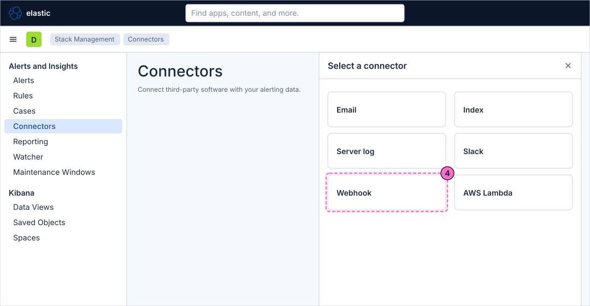
-
In Connector name, type
guide-webhook. -
In URL, type the address of the lab’s receiver inside the Docker network. The form rejects a host name without a dot (it says URL is invalid for
webhook-receiver), so the lab gives the receiver the extra network namewebhook.lab. Leave Method onPOST, and under Authentication choose None, because the form starts on Basic authentication.http://webhook.lab:8080/guide-kibana -
Turn on the switch Add HTTP header, and in the HTTP headers row that appears enter the key
Content-Typeand the valueapplication/json. -
Click Save.
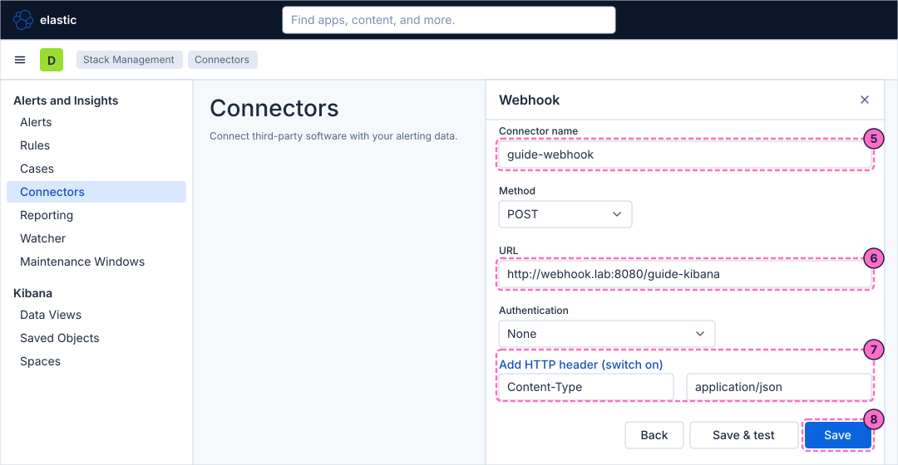
-
Click Create connector again, click Server log, type
guide-server-logas the name and click Save.
Define the rule
-
In the left menu of Stack Management, under Alerts and Insights, click Rules.
-
Click Create rule.
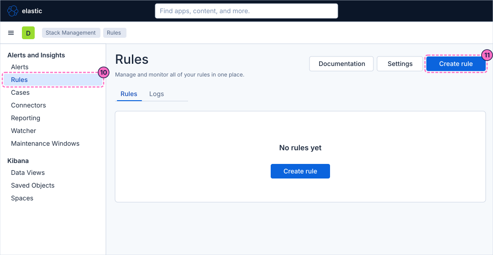
-
In the flyout Create new rule, stay on the tab Rule type and click the card Elasticsearch query ("Alert when matches are found during the latest query run.").
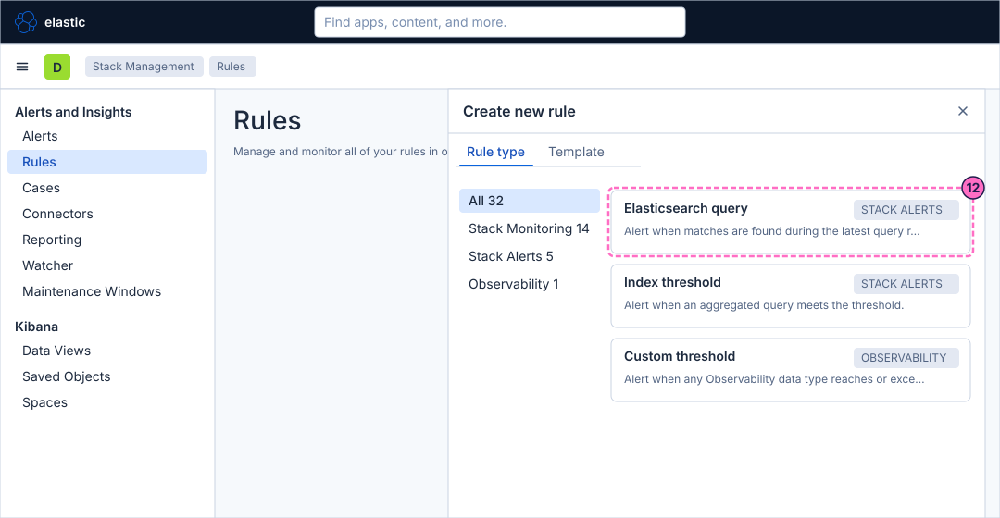
-
In step 1 Definition, under Select a query type, choose KQL or Lucene.
-
In Select a data view, choose Bookshelf logs (guides). The picker starts on the default data view of Kibana, which is another one.
-
In the query box under Define your query, type the KQL query of the error log records:
severity_text : "ERROR" -
Under Set the group, threshold, and time window, change the threshold so that the sentence reads
IS ABOVE 5. -
Change the time window so that the sentence reads
FOR THE LAST 1 minute. The sentence now reads: WHEN count() OVER all documents IS ABOVE 5 FOR THE LAST 1 minute. Leave SIZE at100and Exclude matches from previous runs as it is. -
Click Test query. Kibana runs the query once and reports how many documents match; with normal traffic the count is small.
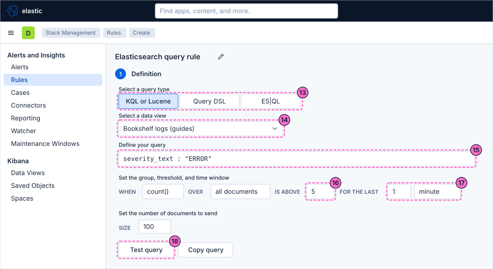
-
In Rule schedule, set Every to
1and the unit tominute.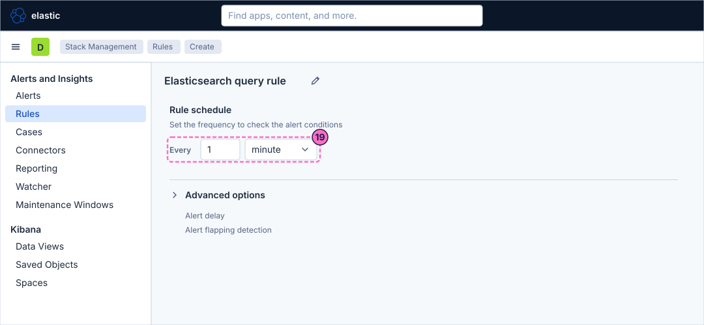
Add the actions
-
In step 2 Actions, click Add action. The flyout Select connector opens.
-
Click the connector
guide-webhook.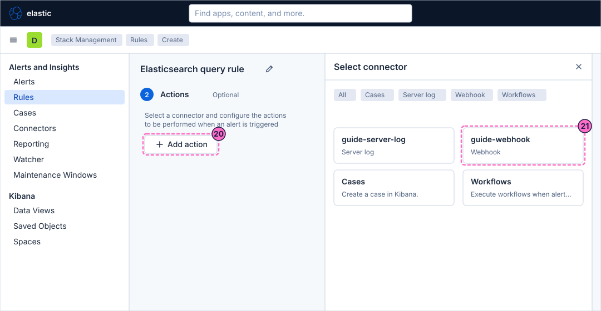
-
In Run when, keep
Query matched. -
In Action frequency, keep For each alert and select On status changes, so that the webhook is called once when the alert becomes active and not at every check.
-
In the body of the action, which is sent with an HTTP POST, type this JSON. The variables in double braces are filled in by Kibana when the action runs:
{"rule":"{{rule.name}}","alert":"{{alert.id}}","status":"{{alert.actionGroupName}}","value":"{{context.value}}","conditions":"{{context.conditions}}"}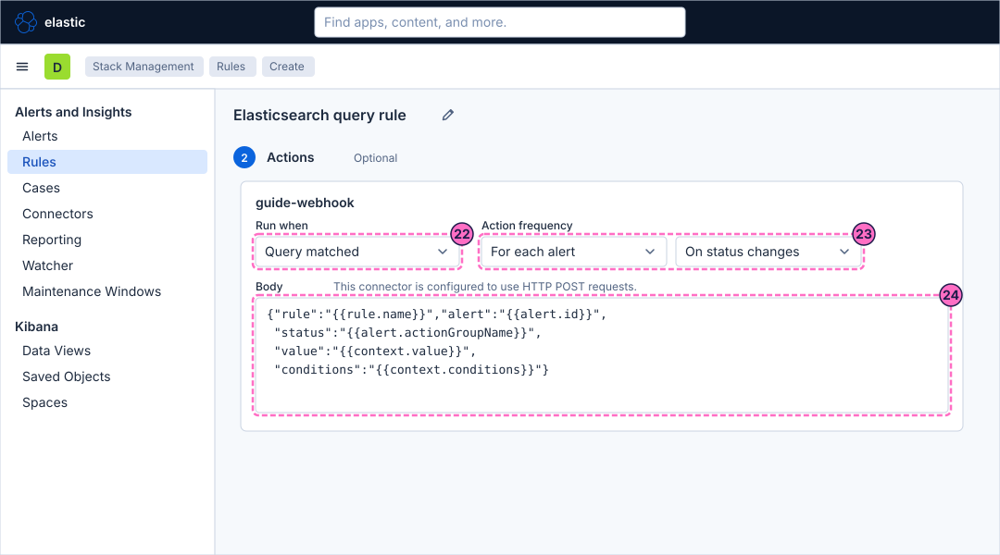
-
Click Add action again.
-
Click the connector
guide-webhookagain. -
In Run when of the new action, select
Recovered. -
In its body, type the message of the recovery:
{"rule":"{{rule.name}}","status":"Recovered"}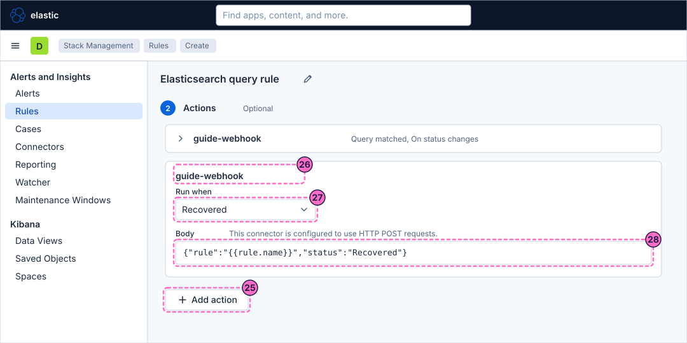
Name the rule and create it
-
In step 3 Details, type
Guide Bookshelf error logsin Rule name. -
Click Create rule. Kibana creates the rule, which is enabled and runs within a minute.
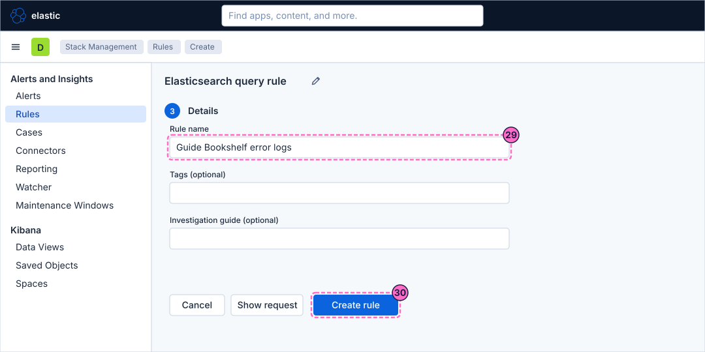
Force the failure and read the alert
-
In a terminal, switch the load generator to its failing mode, which fills the log data stream with error records:
curl -X POST localhost:8090/mode/failing -
After about a minute, open the primary navigation and, under Observability, click Alerts.
-
In the table, find the row of the rule Guide Bookshelf error logs. Its status is Active.
-
Click Alert details, the expand icon at the left of the row.
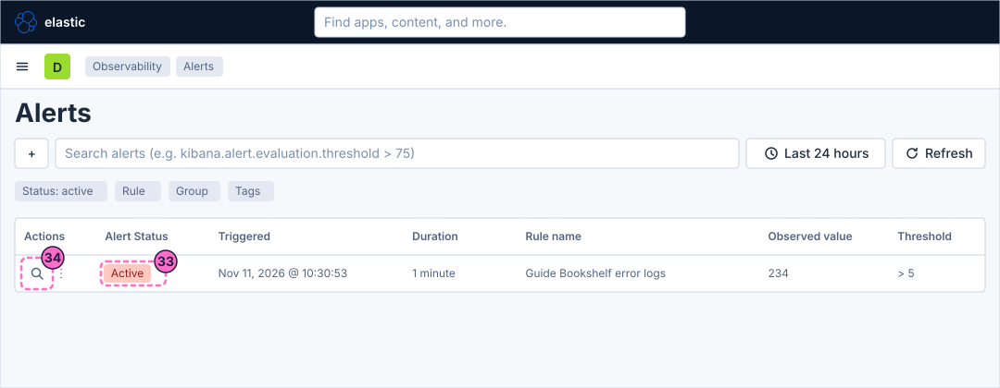
-
In the flyout, read the Reason: it names the document count of the last minute and the threshold.
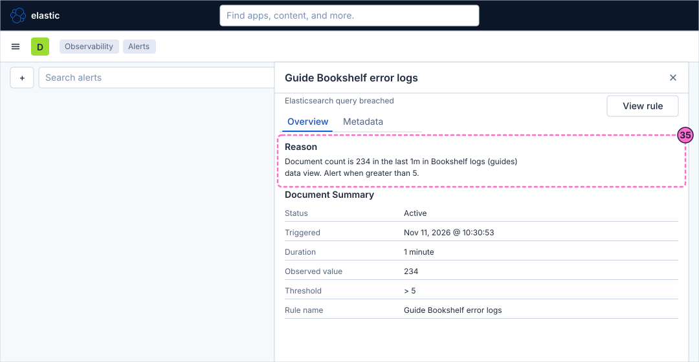
-
In the terminal, read the last delivery of the webhook receiver. The receiver keeps the path and the body of every request it gets:
curl -s localhost:8081 | jq '.[-1].body | fromjson'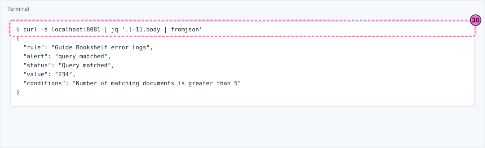
-
Return to normal traffic:
curl -X POST localhost:8090/mode/normal -
Wait about two minutes, reload the alerts page and check that the status of the alert changed to Recovered.
-
Read the deliveries of the receiver again. The last one is the recovery message of the second action:
curl -s localhost:8081 | jq '.[-1].body | fromjson'
Check the result
The alert must go through the whole cycle. In the lab, with a rule that has these settings, the failing mode made the alert Active about 53 seconds after it was switched on, the webhook reached the receiver 3 seconds later with the document count in value, and the alert became Recovered about a minute and a half after normal traffic returned, with a second delivery that carries "status":"Recovered".
Your timings differ by up to a check interval, because the rule runs once a minute and, after the return to normal mode, the window of one minute must first drain.
-
To see what the receiver holds, use
curl -s localhost:8081(the last 50 deliveries as JSON), ordocker compose logs webhook-receiverfrom thelabfolder, which prints oneWEBHOOKline for each. -
The path of every delivery of this guide is
/guide-kibana. -
To repeat the cycle, run
curl -X POST localhost:8090/mode/failingagain, wait for the alert and restore the traffic withcurl -X POST localhost:8090/mode/normal. -
The load generator mode is shown by
curl localhost:8090/; leave it onnormalwhen you finish.
Variations
-
ES|QL instead of KQL. In step 13 choose ES|QL as the query type and write a query that returns a row only when the errors exceed the threshold. The rule alerts when the query returns rows, filtered by the time field and the time window of the rule. The ES|QL form of this rule was not run in the lab:
FROM logs-generic.otel-default | WHERE severity_text == "ERROR" | STATS errors = COUNT(*) | WHERE errors > 5 -
A shorter pass with Index threshold. Choose the card Index threshold in step 12, select the index
logs-generic.otel-defaultand the time field@timestamp, and use the same sentence, WHEN count() OVER all documents IS ABOVE 5 FOR THE LAST 1 minute. This rule type aggregates the documents of the indices without a KQL query, so it counts all the log records, not only the errors, unless the form of your version offers a filter; use the Elasticsearch query rule when you need a query. The Index threshold form was not run in the lab. -
The server log connector. Add a third action with the connector
guide-server-log, Run whenQuery matched, and read the message in the log of the Kibana container withdocker compose logs kibanafrom thelabfolder. The server log connector was created in the lab but its output was not read. -
Other frequencies. On status changes is the quiet choice; the other choices of Action frequency repeat the action or run it for a summary of the alerts, as the actions reference page explains.
What can go wrong
| Symptom | Cause | Fix |
|---|---|---|
The connector list has no Webhook, or the rule form has no Add action for it |
The licence is not the trial of the lab. |
Check that the lab started with the trial licence, as the hands-on lab page explains. |
The alert becomes Active but nothing arrives at the receiver |
The URL of the connector is wrong. From Kibana inside Docker the receiver is |
Edit the connector, correct the URL and use its Save & test button, then read |
The rule never fires |
The data view is not Bookshelf logs (guides), the query has a typo, or the load generator is in normal mode. |
Check the data view and the query with Test query, then run |
The alert stays Active long after normal traffic returned |
The window of one minute still holds error records, or the next run has not happened yet. |
Wait one or two check intervals; check the mode with |
The body of the delivery contains the text of the variables, for example |
The variable was mistyped, or the body was sent as plain text without the double braces closed. |
Retype the body exactly as in the listing and save the rule. |
No recovery message arrives |
The second action was not added or its Run when is not |
Edit the rule and check both actions. |
Clean up
Keep the connectors and the rule while you do the following guides in this series: the next ones use alerts. To remove them, open Stack Management → Alerts and Insights → Rules and delete Guide Bookshelf error logs, then Connectors and delete guide-webhook and guide-server-log.
Leave the load generator in the normal mode: curl -X POST localhost:8090/mode/normal.
Where to go next
-
Previous guide: Share, export and move dashboards.
-
Next guide: Observability rules and SLOs, which uses the custom threshold rule and service level objectives of the Observability solution.
-
Reference: Rules & Stack Rule Types covers the query types and conditions, Connectors the connector types and their forms, and Actions, Frequency & Action Variables the action groups, the frequencies and the variables.